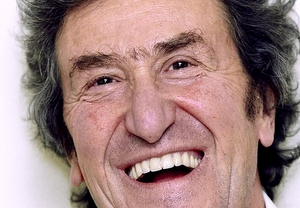

Бывает — проснешься, как птица,
крылатой пружиной на взводе,
и хочется жить и трудиться;
но к завтраку это проходит.
Когда нас учит жизни кто-то,
я весь немею;
житейский опыт идиота
я сам имею.
Крайне просто природа сама
разбирается в нашей типичности:
чем у личности больше ума,
тем печальней судьба этой личности.
В жизни надо делать перерывы,
чтобы выключаться и отсутствовать,
чтобы много раз, покуда живы,
счастье это заново почувствовать.
©Игорь Губерман 